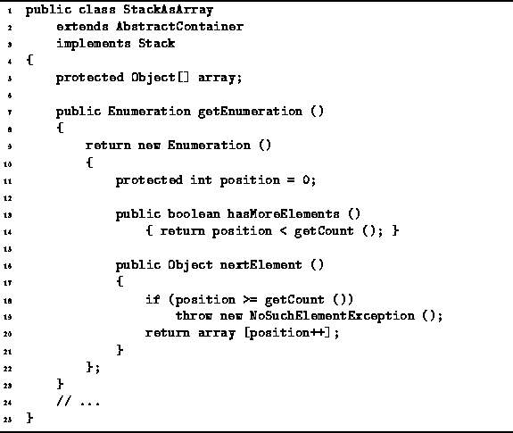

Data Structures and Algorithms
with Object-Oriented Design Patterns in Java
Data Structures and Algorithms
with Object-Oriented Design Patterns in Java
As discussed in Section  ,
the getEnumeration method of a Container
returns an Enumeration.
An enumeration is meant to be used like this:
,
the getEnumeration method of a Container
returns an Enumeration.
An enumeration is meant to be used like this:
Stack stack = new StackAsArray (57);
stack.push (new Integer (3));
stack.push (new Integer (1));
stack.push (new Integer (4));
Enumeration e = stack.getEnumeration ();
while (e.hasMoreElements ())
{
Object obj = e.nextElement ();
System.out.println (obj);
}
This code creates an instance of the StackAsArray class
and assigns it to the variable stack.
Next, several Integer objects are pushed onto the stack.
Finally, an enumeration is used to systematically print out all
of the objects in the stack.
Program defines getEnumeration method
of the StackAsArray class.
The getEnumeration method returns a new instance
of an anonymous, inner class
that implements the Enumeration interface (lines 9-22).

Program: StackAsArray class getEnumeration method.
An inner class is a class that is defined inside another. Unless the inner class is declared to be static, each instance of an inner class can be thought of as existing inside an instance of the outer class. (Inner classes are non-static by default). Because the inner class instance exists inside an outer class instance, it can directly invoke the methods of outer class instance and it can also access the fields of the outer class instance. In general, there can be more than one inner class instance inside a given outer class instance.
An anonymous class is a class that has no name. Anonymous classes are created by extending an existing class or implementing an interface right at the point in the code where the class is being instantiated.
In this case, the Enumeration interface is implemented by defining the field position (line 11) and the methods hasMoreElements (lines 13-14) and nextElement (lines 16-21). The position field is used in the enumeration to keep track of the position in the array of the next object to be enumerated.
The hasMoreElements method is called
in the loop termination test of the while loop given above.
The purpose of hasMoreElements method is to determine
if there are still more objects in the stack to be enumerated.
In Program this is true as long as
the field position is less than count.
Clearly, the running time of hasMoreElements is O(1).
The nextElement method returns the next object to be enumerated.
It returns the appropriate object in the stack,
provided that the value of the position variable
in the range between 0 and  .
Otherwise, it throws a NoSuchElementException exception.
Clearly, the running time of nextElement is also O(1).
.
Otherwise, it throws a NoSuchElementException exception.
Clearly, the running time of nextElement is also O(1).
 Copyright © 1998 by Bruno R. Preiss, P.Eng. All rights reserved.
Copyright © 1998 by Bruno R. Preiss, P.Eng. All rights reserved.